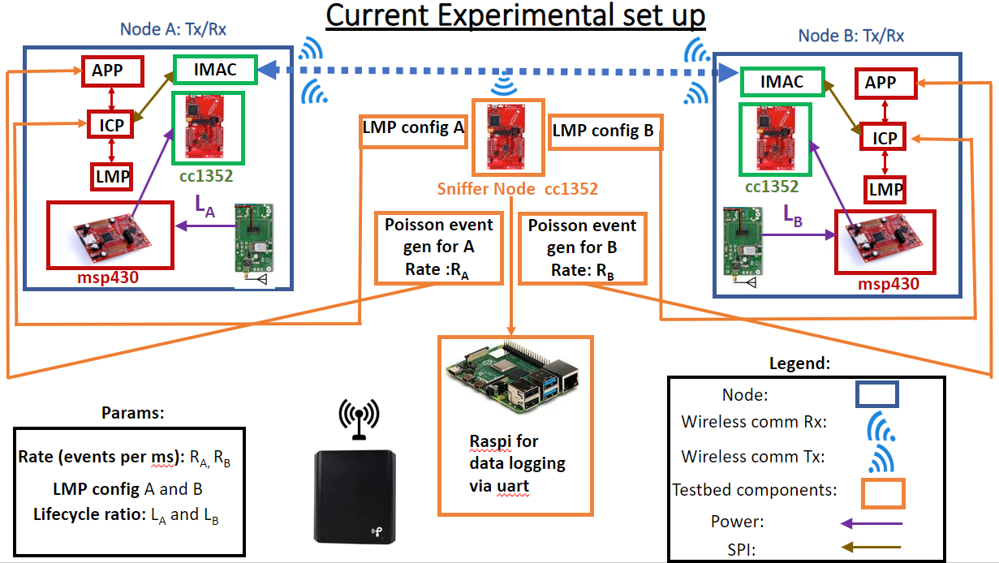
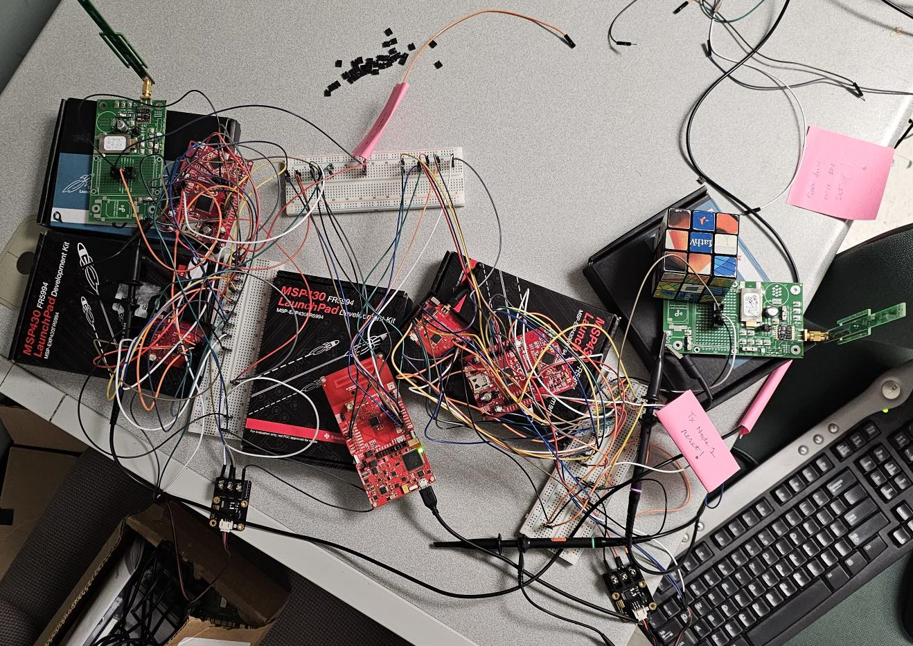

Batteryless sensor nodes are an emerging technology that enables low-cost, low-maintenance, and long-lifetime embedded sensing. Rather than being wired into a continuous power supply or provisioned with a battery, these sensor nodes survive solely on harvesting energy from ambient sources available in their environment, such as RF signals, solar, vibrational, or thermal. As such they are a challenge to design since these sources are often highly variable and very low power. Our team has been tasked with creating a testbed for researchers to use for the battery-less nodes they are developing.
Project Details
My team has the task of developing a testbed system for testing multiple of the batteryless sensor nodes
communicating with each other. The goal of our project is to develop both hardware and software to test these nodes. Additionally
we have the task of making a cleaner sensor or "BOB" node setup of multiple boards that make it up in a clean stack. Our system must
then connect to this BOB node and monitor aspects of it wired such as up time due to the battery nodes not being on all the time. It
will also monitor the wireless communication between the BOB nodes. All this data will be sent from the monitor to a central computer
or host to organize the data and make it accessible for researchers. By the end of the year we have the goal of having ten of these BOB
and monitoring board pairs. The design should be scalable beyond this though with the ability to be applied to a design with hundreds of
nodes.
Within this project I have two tasks. I have been elected group leaders so I organize the work effort,
organize our timeline, manage communication with our client, manage our documentation, and handle submissions for class. Outside
of leadership task I am also a member of our software team writing the embedded code that will run non each of these test designs
to monitor the test and communicate back.
Throughout the first month of this project I have grown in my embedded systems skills as I have looked through
preexisting code, reading documentation, and writing my first pieces of code. With this work I have developed skills with proposing
ideas and describing concerns I see as I understand the project well. Additionally, I have developed skills within leadership
specifically leading a small technical group keeping meetings on topic and creating agendas. I have also gained skills with figuring
out a clients requirements and preferences when developing a solution for them.
Definitions
Requirements
Image Gallery

This is a schematic of the current test setup. Our solution will be similair with the
difference of having one "Sniffer Node" CC1352 per each BOB node. Additionally our setup should have ten node pairs.

The current test setup for the test is wire heavy so our setup should put all boards in a
simple stack. Additionally, the Sniffer nodes should be battery powered and communicate test information back to the
host wirelessly making the wires unnecessary.